Superfood Adventure
I built the video game first. The lesson kept stopping the play — so I rebuilt it as a board game where the nutrition is the play.
At a glance
0
Children interviewed, ages 8–12
0
Foods, each priced in nutrients
₹0
To print the entire game
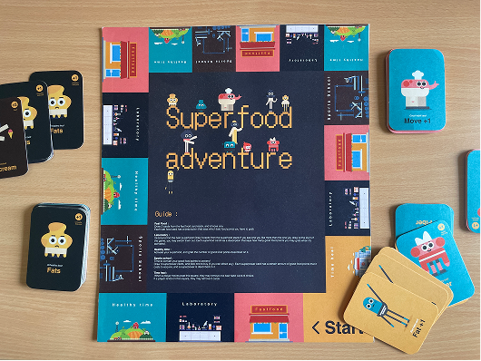
Printed at home, cut out, played.
Summary
A game that teaches children what food does to them — built twice, because the first version taught by interrupting itself.
This was solo. The research, the systems, the rules, every illustration and both builds are mine. Version one is a top-down RPG in Unity where you hunt superfoods stolen by fast-food companies. Version two is a six-player board game you print at home.
The second one is the design work. The first one is why it exists.
The problem
Nutrition education has no grade attached to it, so nobody in the room has a reason to care.
Not the student, who is measured on maths and science. Not the teacher, who is measured on the same. India's school system runs on marks, and a subject outside the mark scheme quietly becomes optional — while childhood obesity in urban India keeps climbing.
Grading nutrition is neither realistic nor a good idea. So the brief I set myself was to replace the missing incentive rather than argue for a new one — to make paying attention the way you win, not the price of being allowed to play.
What the children actually said
Sixteen students aged 8–12, across Ahmedabad, Mumbai, Delhi and Surat. Three things came back from nearly all of them, and all three are about educational games specifically, not about food.
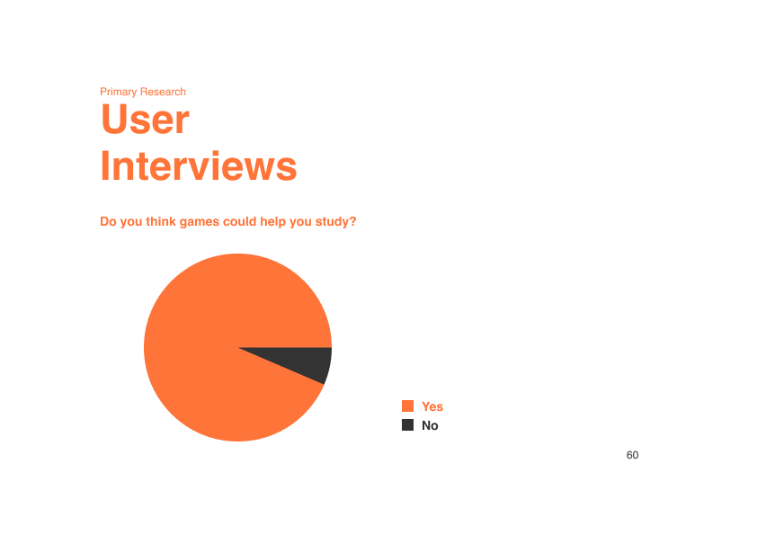
They leave in five to ten minutes. An educational game holds them for one session, then gets played for the teacher rather than for itself.
The learning is a garnish. Their words for the genre amount to an okay game and a bad lesson — facts bolted onto play that would work identically without them.
The computers can't run them. Old school machines, long loads, and crashes that take the session's progress with them. This one turned out to matter more than the other two.
What it rests on
Two pieces of theory did real work here. Thaler and Sunstein's nudge — changing the choice architecture without forbidding anything or changing the payoff — and Fogg's behaviour model, where a behaviour needs motivation, ability and a prompt at the same moment.
A game is unusually good at all three: it supplies the motivation, keeps the ability trivial, and prompts on every turn. That is the whole reason to teach this through a game rather than a poster.
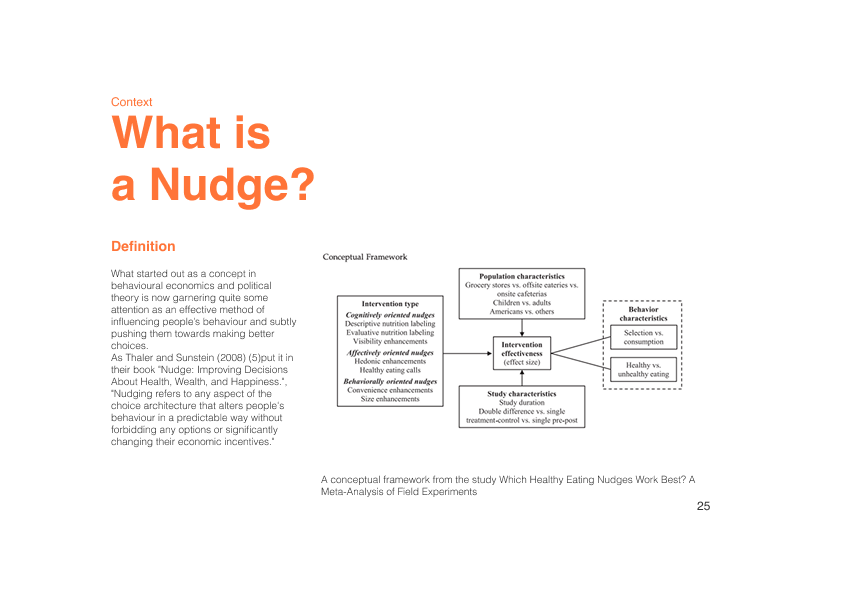
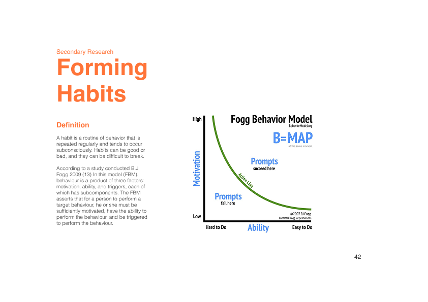
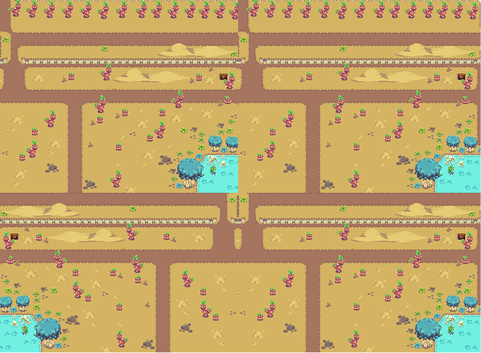
Version one: an RPG in Unity.
What I built first
A top-down RPG: forest, desert, ocean, a city, a laboratory. Superfoods stolen by fast-food companies, enemies in the way, and an NPC in every level who teaches you about the food you just found.
It ran. You could walk the levels, open chests, take damage and talk to Dr Rose. As a first thing ever coded it was the steepest part of the year, and I was proud of it.
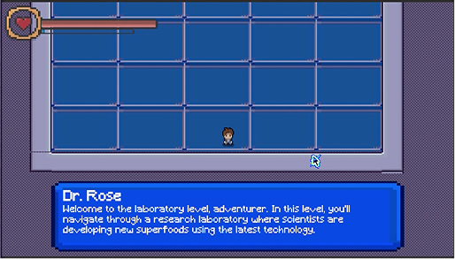
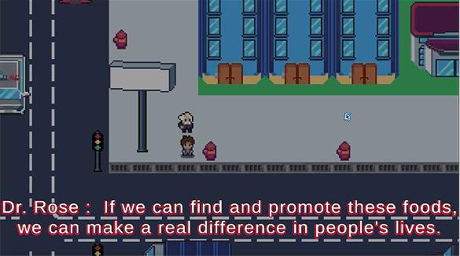
Where it broke
Everything the game teaches, it teaches by stopping.
Dr Rose is the lesson. She appears, she says the true and useful thing, and you press a key to make her go away — and the game you were actually playing carries on exactly as it would have if she had never spoken. That is the five-to-ten-minute problem the children described, reproduced by me, in my own build.
The chests made it plainer. You find a burger in a chest and nothing happens — it's loot, like everything else. The nutrition was a layer painted on top of the game rather than anything the game ran on.
And underneath that sat the constraint I could not design my way past: the schools this was for could not run it. A Unity build needs a machine, and the interviews had already told me those machines crash and lose the session.
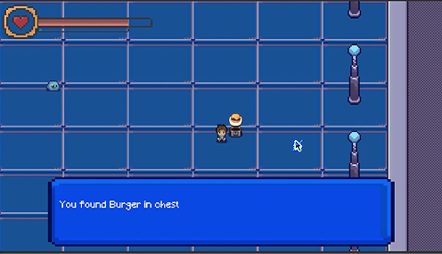
The decision, drawn
Two ways for a game to carry a fact. The first is the one almost every educational game picks, and the one I had already built.
The economy
Every food in the game is priced in the nutrients it actually carries. Good points come in vitamins, calcium and fibers; bad points in sugar, fat and carbohydrates. You collect them as physical tokens, so your diet sits on the table in front of you where everyone can see it.
| Food | Yields |
|---|---|
| Dark green vegetables | +1 fiber +1 calcium |
| Berries | +2 vitamins |
| Green tea | +1 fiber +1 vitamin |
| Eggs | +1 calcium +1 vitamin |
| Legumes | +2 vitamins |
| Nuts | +2 fibers |
| Kefir | +2 calcium |
| Garlic | +2 fibers |
| Olive oil | +1 vitamin +1 fiber |
| Food | Costs |
|---|---|
| Burger | +1 fat +1 carbohydrate |
| Fries | +2 fat |
| Candy | +2 sugar |
| Hot dog | +1 fat +1 carbohydrate |
| Ice cream | +2 sugar |
| Soda | +3 sugar |
| Chocolate | +1 fat +1 sugar |
| Chips | +2 fat |
The fast-food square doesn't let you decline. You draw three and pick the least damaging one — which means the only way to play well is to know which of a burger, a soda and a bag of chips hurts you least, and why.
What losing looks like
Bad points are not a penalty score. They accumulate into habits, and habits are what actually end you — which is the argument the whole thesis is making, expressed as a rule rather than a sentence.
More than five bad points in one category and you draw a bad habit card. You may then clear five of those points — the damage is done, and it has become something you carry.
A bad habit card makes the rest of your game worse: you move one square less than you roll, or every junk food card now costs you an extra fat, or your superfood yields one less calcium.
Hold three bad habit cards and you are out. The last player standing wins.
Good points are the other half of it. You spend them at the sports school to buy superpowers — an extra square each turn, a bonus calcium on every superfood — so eating well is not virtue, it's capital. The children I interviewed had asked for exactly this: tokens you earn and spend on something you want.
The facts are still there
I didn't remove the teaching — I moved it. The nutritional detail still prints on the cards, but it now sits beside a number you are about to make a decision with, and the action cards are drawn as the back of a food package, so the layout a child reads in the game is the layout on the thing in their hand at a shop.
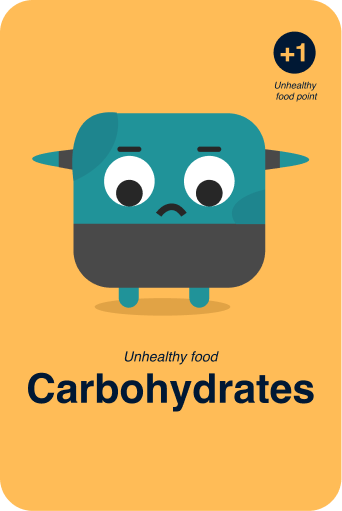
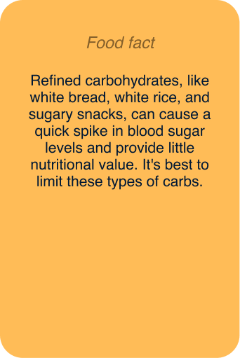
The cast
Every food is a character before it is a number. It starts on paper — faces, postures, a wizard and a knight that didn't survive — and lands as flat vector shapes with two eyes and one expression: cheap to print, readable at standee size, and drawn so a child can tell the ones that are on their side from the ones that aren't without reading a word.
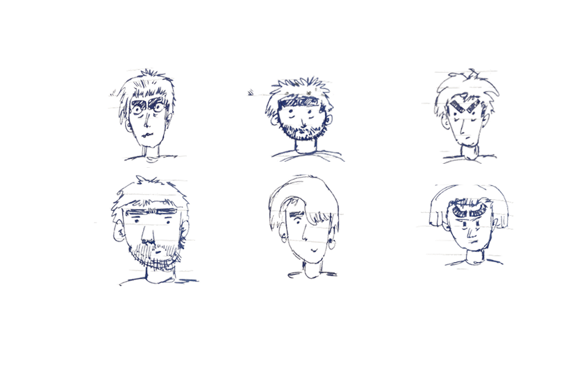
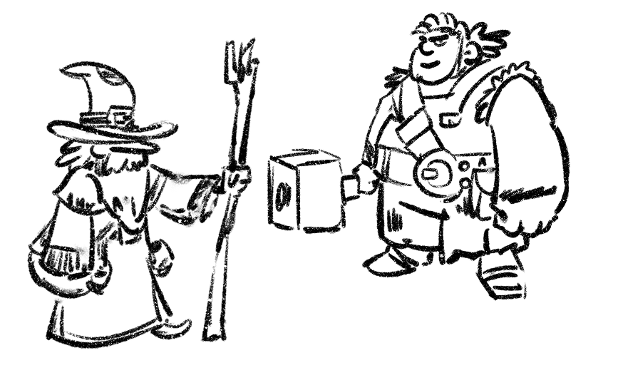
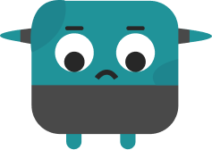
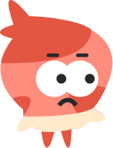
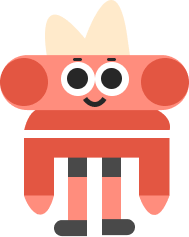
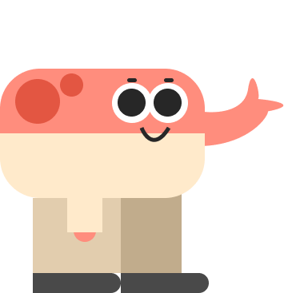
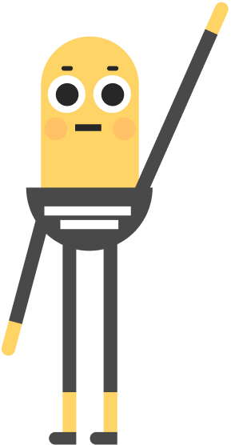
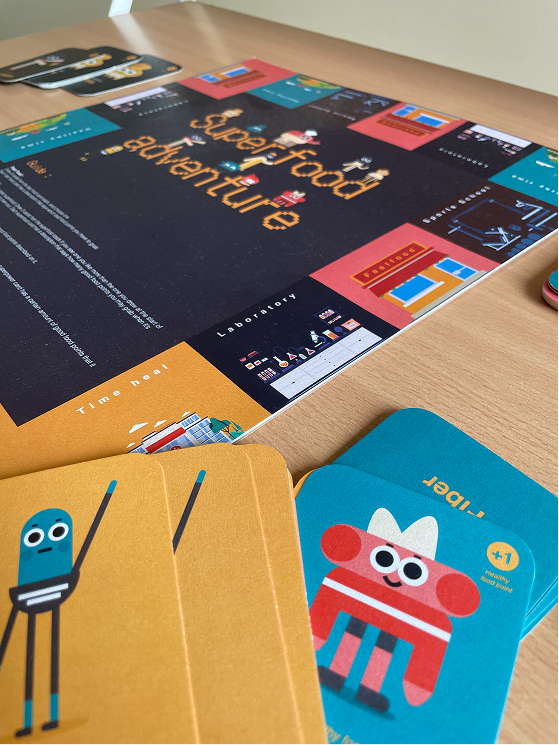
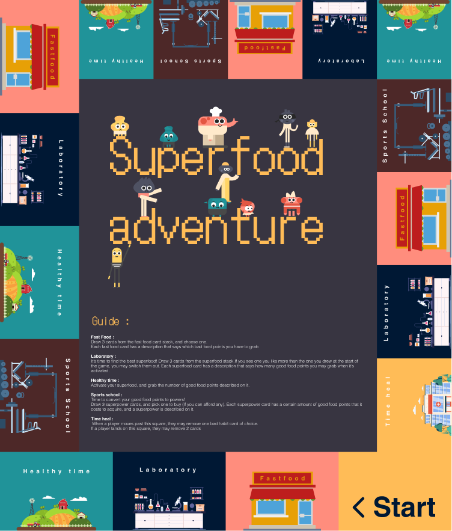
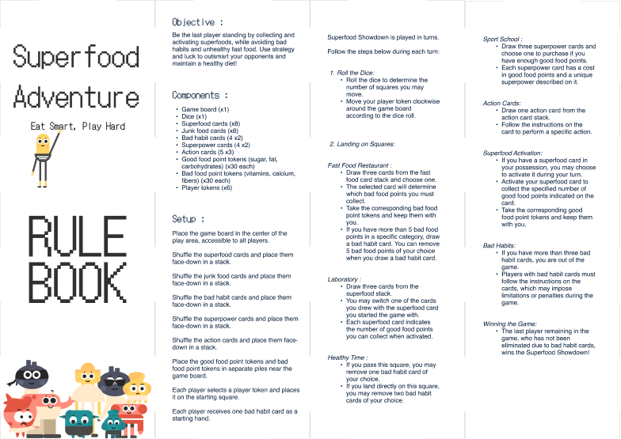
Printable, on purpose
A manufactured board game solves the wrong half of the problem.
Manufacture it and you inherit a supply chain — units, shipping, and the certainty that a game handed to nine-year-olds loses a token in week one and becomes unplayable while a replacement crosses the country. Meanwhile the schools that most need it are the ones a distribution run reaches last.
So the deliverable is a file, not a product. Anyone with a printer makes the whole game — board, decks, tokens, standees — for the price of the paper. A lost card is reprinted, not reordered. And a translation is an edit rather than a manufacturing run, which is the only way this ever reaches a classroom that doesn't work in English.
- To make one copy
- ≈ ₹10–20
- To replace a lost card
- One page
- To add a language
- Edit the file
What the table changed
Groups played it, and three rules changed because of what they did rather than what I intended.
Superpowers became recipes. Buying a power with points alone was flat, so powers now cost points and ingredient cards, collected from a new farm square. Cooking something is a better fiction for the reward than purchasing a stat.
Bad habits got physical. Every bad habit card now carries an exercise you perform when you take it. The penalty stops being an abstraction and becomes ten seconds of doing something, at the table, in front of everyone — which is also how the game gets children out of their chairs at all.
Hands got a limit. Players hoarded; over five cards in hand and the farm square now forces a discard.
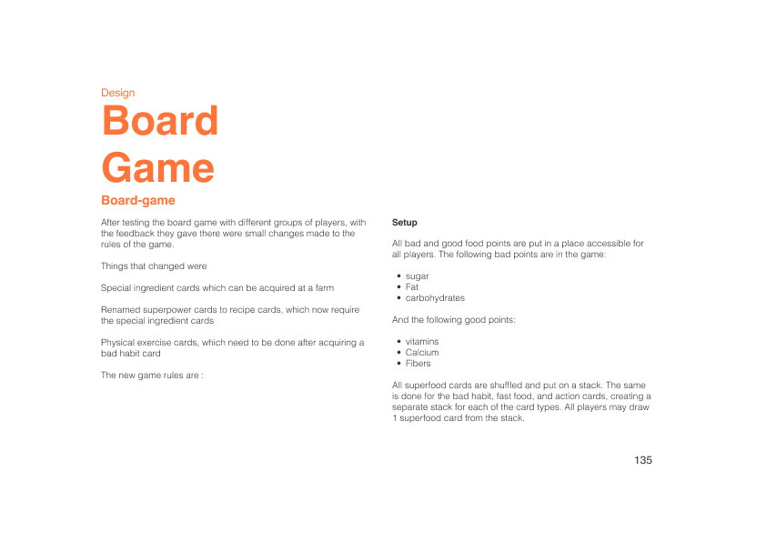
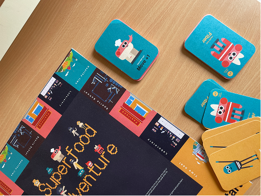
Where it ended
The board game is finished, playable and has been played. The RPG is not, and I'd rather say that than dress version one as a companion piece.
What the year actually produced was a design argument I still hold: a lesson a player can dismiss is a lesson the game does not need. If the teaching can be removed and the game still works, it was decoration. Making the nutrition into the currency was the only move that made it structural.
What this case study doesn't have
Worth saying plainly, because the whole premise is educational. Nothing here measures whether anyone learned anything. There was no knowledge check before and after a session, and no follow-up on what children ate afterwards. The evidence on this page runs research → decision → artefact, and stops there.
The sixteen interviews also have a bias I can name: they were students at urban private schools in four cities — close to the least likely group to need a game you print because the computers don't work. The format was designed for children I did not interview.
What I'd change
Two things, and they're the same thing twice. Put one printed copy in a classroom without working computers, which is the premise the format was built on and the one place it was never tested. And run a five-question check before the session and the same five after — not to prove it works, but because a game that claims to teach should be willing to find out that it doesn't.
I would also cut the RPG from the deliverable and keep it in the process. It earned its place as the reason for the pivot; it didn't earn its place as a second product.